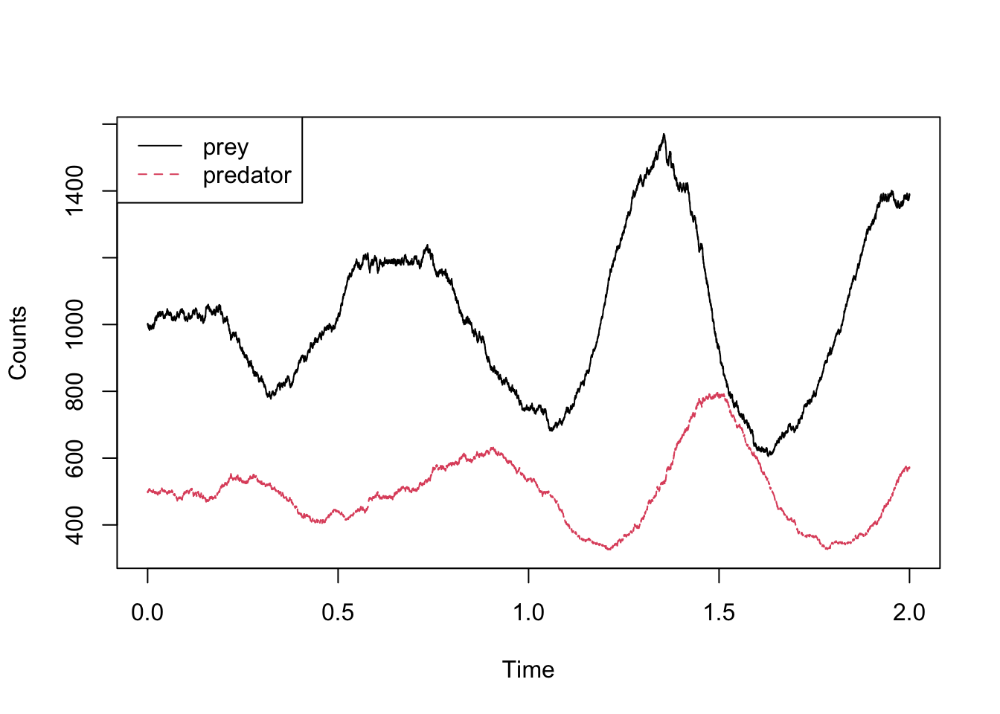
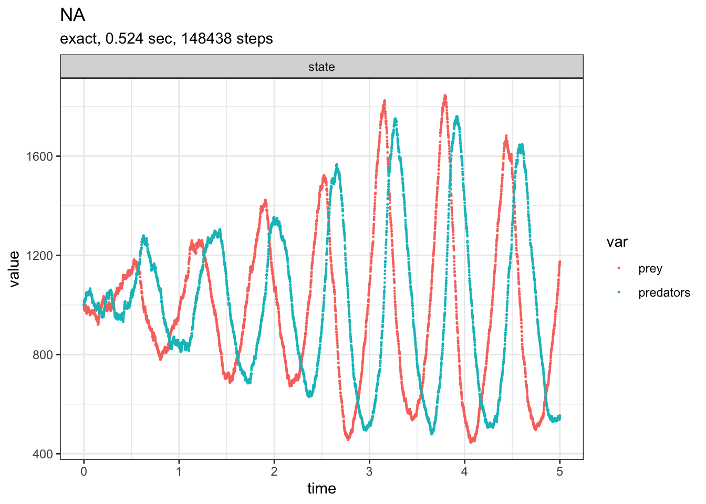
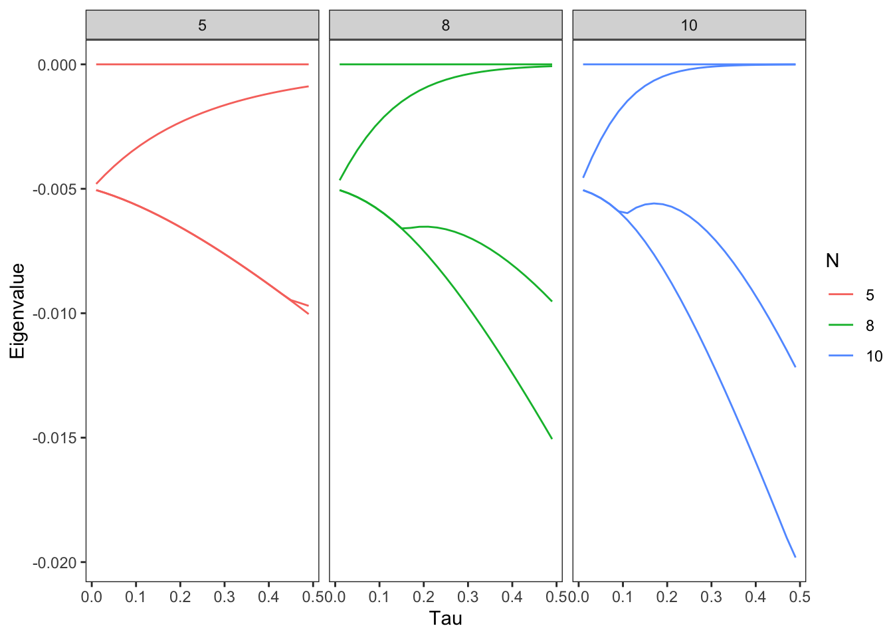
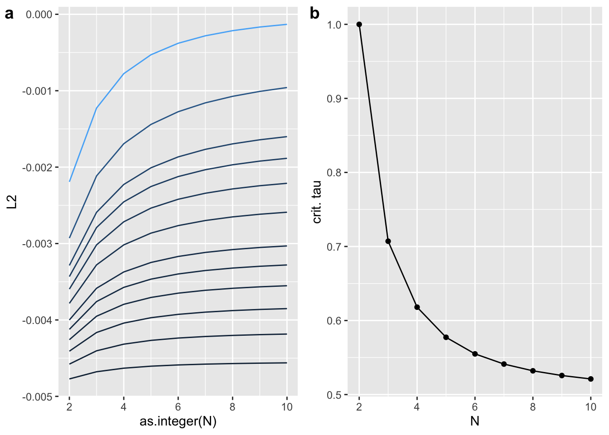
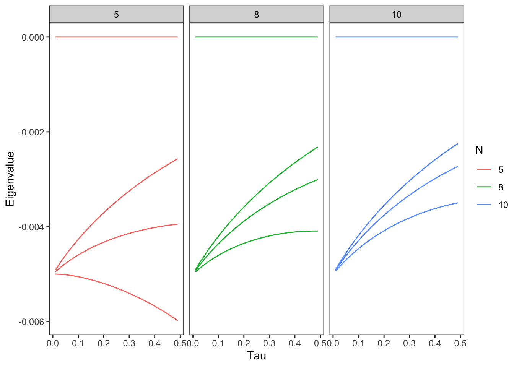

Libraries
library(adaptivetau)
library(GillespieSSA)
library(GillespieSSA2)
library(tidyverse)
library(cowplot)library(adaptivetau)
library(GillespieSSA)
library(GillespieSSA2)
library(tidyverse)
library(cowplot)There are 3 functions featured in in adaptive tau
ssa.exact - the gillespie algorithm for exact transitions
ssa.adaptivetau - implements the Cao adaptive tau algorithm in C++
ssa.maketrans - create transition matrix
lvrates <- function(x, params, t) {
with(params, {
return(c(preygrowth*x["prey"], ## prey growth rate
x["prey"]*x["pred"]*eat, ## prey death / predator growth rate
x["pred"]*preddeath)) ## predator death rate
})
}
params=list(preygrowth=10, eat=0.01, preddeath=10);
r=ssa.exact(c(prey = 1000, pred = 500),
matrix(c(1,0, -2,1, 0,-1), nrow=2), lvrates, params, tf=2)
matplot(r[,"time"], r[,c("prey","pred")], type='l', xlab='Time', ylab='Counts')
legend("topleft", legend=c("prey", "predator"), lty=1:2, col=1:2)
GillespieSSA2 is an improvement on the original that runs many times faster for simulation. It is also a method for simulating CTMC.
initial_state <- c(prey = 1000, predators = 1000)
params <- c(c1 = 10, c2 = 0.01, c3 = 10)
reactions <- list(
# propensity function effects name for reaction
reaction(~c1 * prey, c(prey = +1), "prey_up"),
reaction(~c2 * prey * predators, c(prey = -1, predators = +1), "predation"),
reaction(~c3 * predators, c(predators = -1), "pred_down")
)
out <-
ssa(
initial_state = initial_state,
reactions = reactions,
params = params,
method = ssa_exact(),
final_time = 5,
census_interval = .001,
verbose = TRUE
)Running SSA exact with console output every 1 seconds
walltime: 0, sim_time: 0
SSA finished!plot_ssa(out)
This section recreates the figures from the mieghan paper
# N <- 3
# create adjacency graph of line graph
line_adj <- function(N) {
toeplitz(c(0, 1, rep(0, N-2)))
}
complete_adj <- function(N) {
A <- matrix(1, N, N)
diag(A) <- 0
A
}
sis_make_Q <- function(A, delta, beta) {
if (nrow(A) > 10) rlang::abort("please dont")
N <- nrow(A)
num_states <- 2^N
states <- matrix(as.integer(intToBits(0:(num_states - 1))), nrow = 32)[N:1,]
num_I <- states |> colSums()
chr_states <- apply(MARGIN = 2, states, FUN = {\(x) paste0(x, collapse = "")})
possible_trans <- which(adist(chr_states) == 1, arr.ind = TRUE)
assign_rate <- function(x, delta, beta, num_I){
if (num_I[x[1]] > num_I[x[2]]) return(delta)
else {
threat_node <- which((states[, x[2]] - states[,x[1]]) == 1)
(states[,x[1]] %*% A)[threat_node] * beta
}
}
trans_rate <- apply(possible_trans,
MARGIN = 1,
FUN = assign_rate,
delta = delta, beta = beta, num_I = num_I)
Q_el <- cbind(possible_trans,
trans_rate)
Q <- matrix(0, num_states, num_states)
Q[Q_el[,1:2 ]] <- Q_el[,3]
# set diags
diag(Q) <- -rowSums(Q)
Q
}
# Figure 5
# 4 largest eigenvalues of complete graph
# top 4 eigen values
Q_top_4 <- function(tau, A) {
delta <- 5e-3
beta <- tau * delta
Q <- sis_make_Q(A, delta, beta)
sort(Re(eigen(Q)$values), decreasing = T)[1:4]
}
# Plot figure -------------------------------------------------------------
taus <- seq(.01, .5, .02) # parameter
A <- complete_adj(5)
K5 <- taus |> map(Q_top_4, A = A)
K5_mat <- do.call(rbind, K5)
K5_tib <- K5_mat |> as_tibble(.name_repair = ~as.character(1:4)) |>
add_column(N= 5, taus = taus, .before = 1)
A <- complete_adj(8)
K8 <- taus |> map(Q_top_4, A = A)
K8_mat <- Re(do.call(rbind, K8)) # real values
K8_tib <- K8_mat |> as_tibble(.name_repair = ~as.character(1:4)) |>
add_column(N= 8,taus = taus, .before = 1)
A <- complete_adj(10)
K10 <- taus |> map(Q_top_4, A = A)
K10_mat <- do.call(rbind, K10)
K10_tib <- K10_mat |> as_tibble(.name_repair = ~as.character(1:4)) |>
add_column(N= 10, taus = taus, .before = 1)
bind_rows(K5_tib, K8_tib, K10_tib) |>
pivot_longer(cols = 3:6, names_to = "rank")|>
ggplot(aes(x = taus, y = value, group = interaction(N, rank), color = factor(N))) +
geom_line() +
labs(x = "Tau",
y = "Eigenvalue",
color = "N") +
facet_wrap(~N) +
theme_test()
# Figure 7
taus <- c(0.05, .1, .15, .2, .25, .3, .4, .5, .6, .7, 1, 2)
by_size <- function(N) {
A <- line_adj(N)
Q_2 <- function(tau) {
delta <- 5e-3
beta <- delta * tau
Q <- sis_make_Q(A, delta, beta)
sort(Re(eigen(Q, only.values = TRUE)$values), decreasing = T)[2]
}
taus |> map_dbl(Q_2)
}
Ns <- 2:10
line_2 <- Ns |> map(by_size) |> as_tibble(.name_repair = ~Ns |> as.character())
spectral_line <- 2:10 |> map_dbl(~1/max(abs(eigen(line_adj(.x))$values))) # spectral radius
g1 <- line_2 |> add_column(tau = taus, .before = 1) |>
pivot_longer(cols = -1, names_to = "N", values_to = "L2") |>
ggplot(aes(x = as.integer(N), y = L2, color = tau, group = tau)) +
geom_line() +
theme(legend.position = "none")
g2 <- qplot(x = 2:10, spectral_line, xlab = "N", ylab = "crit. tau") + geom_line()
plot_grid(g1, g2, labels = "auto")
Cool, we’ve replicated the two main plots in the papers
# bifurcation on line graphs?
taus <- seq(.01, .5, .02) # parameter
A <- line_adj(5)
L5 <- taus |> map(Q_top_4, A = A)
L5_mat <- do.call(rbind, L5)
L5_tib <- L5_mat |> as_tibble(.name_repair = ~as.character(1:4)) |>
add_column(N= 5, taus = taus, .before = 1)
A <- line_adj(8)
L8 <- taus |> map(Q_top_4, A = A)
L8_mat <- Re(do.call(rbind, L8)) # real values
L8_tib <- L8_mat |> as_tibble(.name_repair = ~as.character(1:4)) |>
add_column(N= 8,taus = taus, .before = 1)
A <- line_adj(10)
L10 <- taus |> map(Q_top_4, A = A)
L10_mat <- do.call(rbind, L10)
L10_tib <- L10_mat |> as_tibble(.name_repair = ~as.character(1:4)) |>
add_column(N= 10, taus = taus, .before = 1)
bind_rows(L5_tib, L8_tib, L10_tib) |>
pivot_longer(cols = 3:6, names_to = "rank")|>
ggplot(aes(x = taus, y = value, group = interaction(N, rank), color = factor(N))) +
geom_line() +
labs(x = "Tau",
y = "Eigenvalue",
color = "N") +
facet_wrap(~N) +
theme_test()
It doesn’t seem like there’s anything here, but what about .5 to 2? It seems there’s no bifurcating patterns on these graphs because we can already see the top 4 values.